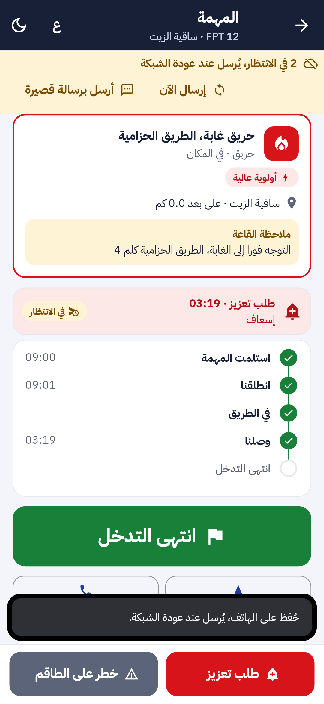
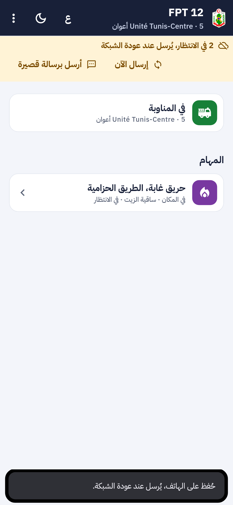
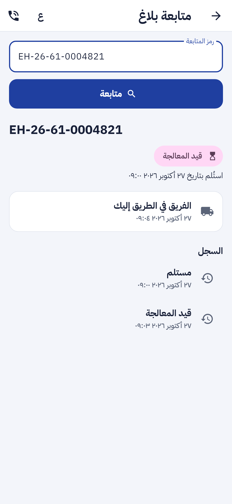
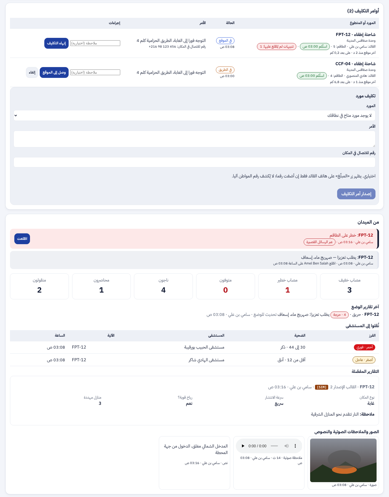

تقرير المرحلة P4d: قائد الفريق يعمل دون شبكة (F-STF-07)، بديل الرسالة القصيرة الموقّعة، تتبّع المركبة، إشعار المهمة فوق شاشة القفل، تطبيق أعوان منفصل، وإعلام المواطن بأن الفريق في الطريق ثم وصل (F-APP-38)
client_id و device_at)، فتُطبَّق مرة واحدة ولو وصلت مرتين (برسالة قصيرة ثم بالإنترنت). الخادم يقبل وقت الهاتف إن لم يتجاوز 12 ساعة في الماضي ولم يكن في المستقبل.EH2 <الجهاز> <المهمة> <الحدث> <الوقت> <المعرّف> <التوقيع>، أقل من 160 حرفا، موقّعة بـ HMAC-SHA256 بمفتاح خاص بالهاتف يُجلب مع الشبكة ويُحفظ في المخزن الآمن. تفتح تطبيق الرسائل جاهزة، والقائد يضغط «إرسال» فقط. للإقرار والخطوات والتنبيهات.citizen و staff («ء-حماية الأعوان»، معرّف مختلف)، والعرض فوق القفل لنسخة الأعوان وحدها.تطبيق الأعوان بالعربية: الخطوات المنتظرة دون شبكة، وقائمة المهام مع علامة الانتظار؛ وتطبيق المواطن: بطاقة الفريق في متابعة البلاغ:



وفي لوحة القيادة: آخر موقع للمركبة ومسافتها من الحادثة:

| البند | الحالة | التقدم |
|---|---|---|
| F-STF-03 إلى 06 و F-DSH-35 | منجزة (P4a إلى P4c) | |
| F-STF-07 العمل دون شبكة لقائد الفريق | منجز (P4d) | |
| بديل الرسالة القصيرة الموقّعة | منجز (P4d) | |
| تتبّع المركبة وآخر موقع في اللوحة | منجز (P4d) | |
| إشعار المهمة فوق شاشة القفل ورمز الهاتف | منجز (P4d) | |
| تطبيق الأعوان المنفصل (نكهة أندرويد) | منجز (P4d) | |
| F-APP-38 إعلام المواطن بالفريق | منجز (P4d) |
تقدم P4d: 100%. تطبيق الأعوان كله (P4a إلى P4d): 100%، يبقى التجريب الميداني.
notify-sim كما في المراحل السابقة؛ الرقم الحقيقي للبوابة وتطبيق Firebase لنسخة الأعوان يُضبطان عند النشر.| المكوّن | العدد | النتيجة |
|---|---|---|
| الخلفية (pytest) | 886، منها مسارات جديدة في test_crew_offline.py | كلها ناجحة |
| تطبيق الهاتف (flutter test) | 570، منها 6 مسارات في test/staff/staff_offline_test.dart وحالة نفاذ لشريط الانتظار | كلها ناجحة |
| لوحة القيادة (vitest) | 472 | كلها ناجحة |
flutter analyze و ruff و mypy و eslint و tsc والتتبّع | — | لا ملاحظة |
citizen و staff يُتحقَّق منه في CI.لا حزمة جديدة: التشفير والتوقيع بـ cryptography و crypto، الموقع بـ geolocator، الإشعار بملء الشاشة بـ flutter_local_notifications، والرمز بـ firebase_messaging، وكلها مثبّتة من قبل. القائمة الكاملة في versions.md.
0.21.0 (البناء 20) · Flutter 3.47.7 · 1
flutter build apk --flavor staff -t lib/main_staff.dart0052 · 1
via، الجدول ops.crew_position، أوقات الفريق في البلاغ، team_noticesalembic upgrade head366 مسارا · 435 عملية · 2
/api/v1/crew/missions/{assignment_id}/positions و /api/v1/crew/devices/current/sms-key3
STAFF_SMS_NUMBERRETENTION_CREW_POSITION_DAYS=30spec/: F-STF-07 و F-APP-38 منجزتان، 366 مسارا و435 عملية، الاختبارات، وخارطة الطريق.diagrams/: مخطط تسلسل جديد «قائد الفريق دون شبكة» (50)، صنف موقع الفريق وحقول via، وحالات الاستعمال T14 إلى T16 و C38.presentation/.STAFF_SMS_NUMBER)، وإشعار المهمة يحتاج تطبيق Firebase مسجّلا بمعرّف نسخة الأعوان.اكتمل تطبيق الأعوان (P4). الخطوة التالية: تجريب ميداني مع فريق في ولاية واحدة (هاتف أندرويد، رقم بوابة، تطبيق Firebase)، ثم ما تبقى في القائمة المؤجلة.